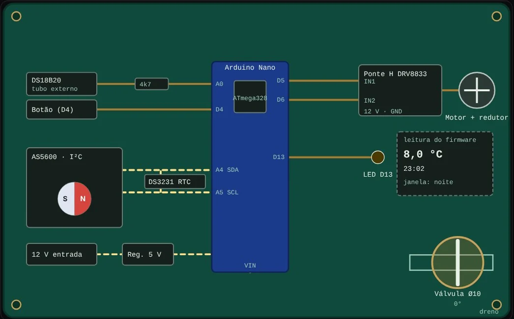

Sistemas embarcados · CAD 3D · Gêmeo digital
Sepia · Válvula borboleta inteligente Ø10 mm
Uma válvula borboleta de Ø10 mm com quatro firmwares em C/C++ (purga anti-gelo, corte de gás, damper de CO₂ e proteção contra vazamento), simulados no navegador junto com o gêmeo digital 3D.

Visão geral
Uma válvula borboleta de Ø10 mm com quatro firmwares em C/C++ (purga anti-gelo, corte de gás, damper de CO₂ e proteção contra vazamento), simulados no navegador junto com o gêmeo digital 3D.
Quatro firmwares para Arduino Nano/Pro Mini e ESP32/ESP32-C3, simuladores em JavaScript que reproduzem a lógica de cada módulo (com diagrama da placa em tempo real e console serial), e um gêmeo digital 3D montado a partir de 7 STLs, com vista explodida, raio-X, corte seccional e escoamento animado. O código do firmware pode ser lido dentro da própria placa, com a linha em execução destacada.
Problema de engenharia
Validar a lógica de atuação e de segurança de uma válvula de 90° com encoder magnético, em quatro aplicações distintas, antes de montar a peça física. Cada aplicação tem modos de falha próprios: eixo travado, sensor ausente, encoder sem resposta, perda de energia.
Arquitetura e metodologia
- Mecânica: corpo de 88 × 50 mm, passagem Ø10 mm, obturador Ø32 × 3 mm e eixo Ø6 mm; a posição vem de um AS5600 (I²C, 0x36) com ímã diametral na ponta do eixo, sem fins de curso.
- Firmware: máquina de estados por módulo (por exemplo FECHADA, ABRINDO, ABERTA, FECHANDO, BLOQUEADA e FALHA), malha fechada pelo encoder e detecção de travamento (stall).
- Segurança: bloqueio persistente em EEPROM, rearme com botão segurado por 3 s, tentativas de desencrave com recuo medido pelo encoder e estado FALHA quando não há posição confiável.
- Simulação: cada módulo tem um simulador que reproduz a lógica do firmware; os ângulos do simulador acionam o gêmeo 3D.
- Publicação como página estática autocontida, sem dependências externas.

Ferramentas e tecnologias
Parâmetros, equações e decisões técnicas
| Parâmetro | Valor | Observação |
|---|---|---|
| Obturador | Curso de 90° | 0° fechada, 90° aberta; posição lida pelo AS5600 |
| Corpo da válvula | 88 × 50 mm; passagem Ø10 mm | Altura de 36 mm na purga e de 62 mm nos módulos de gás, CO₂ e água; obturador Ø32 × 3 mm e eixo Ø6 mm |
| Gêmeo 3D | 7 STLs | O ímã do encoder é ilustrativo e não faz parte dos STLs |
| Purga anti-gelo | Abaixo de 3,0 °C, entre 22 h e 6 h | Purga de 30 s, com intervalo mínimo de 30 min; sensor DS18B20 e RTC DS3231; RTC ausente é tratado como noite |
| Corte de gás | Corte na mesma iteração do laço | Sensor PIR e detector de gás; aquecimento de 30 s; rearme com botão por 3 s e sem presença |
| Damper de CO₂ | 600 a 1200 ppm | Degraus de 15° com histerese de 50 ppm; umidade crítica de 95% UR abre a 90°; fail-safe a 45° sem leitura por 10 s |
| Controlador de água | Pré-alarme de 60 s | Sonda por condução com filtro de 2 s; bloqueio em EEPROM; até 2 tentativas de desencrave com recuo de 15° |
| Plataformas | Arduino Nano / Pro Mini e ESP32 / ESP32-C3 | Ponte H DRV8833 ou L9110 |
Decisões técnicas
- Posição por encoder em vez de fins de curso: o AS5600 dá posição absoluta, permite detectar travamento e confirmar o fechamento. Se o encoder não responde durante uma manobra, o motor para e o sistema entra em FALHA, porque sem posição não há como confirmar que a válvula fechou.
- Falha segura por módulo: a partida fecha a válvula antes de qualquer outra coisa; no gás, a abertura é negada com presença ou gás detectado; no CO₂, a leitura ausente leva a válvula a 45°; no RTC ausente, a purga assume noite.
- Estado crítico persistente: o bloqueio sobrevive à falta de energia (EEPROM) e só sai por rearme deliberado.
- Servo descartado no corte de gás, porque não é fail-safe, em favor de motor DC com redutor.
- Correções documentadas no código: o firmware de água lista 11 correções em relação à versão anterior, como tratar a falha de leitura do AS5600 (antes assumia 0°), rearmar para FECHANDO em vez de FECHADA e dar timeout ao I²C no AVR.
Resultados
- Quatro módulos com firmware completo, somando cerca de 3.000 linhas de C/C++ (832, 603, 893 e 660 linhas).
- Quatro simuladores com controles de falha (sensor desconectado, RTC ausente, eixo obstruído, encoder solto), console serial e diagrama da placa com os sinais em tempo real.
- Gêmeo digital 3D com vista explodida, raio-X, corte seccional, escoamento, rótulos, vistas predefinidas e controle manual do ângulo.
- Leitor de firmware embutido na placa, com realce de sintaxe e da linha ativa.
Validação e testes
- A lógica é exercitada nos simuladores, que reproduzem as máquinas de estado e as condições de falha de cada firmware.
- O próprio firmware informa que as placas foram testadas “em teoria”, e o site descreve o conjunto como protótipo educacional que exige teste em bancada, com água, antes de qualquer instalação.
- Não há testes automatizados nem testes em hardware registrados.
Natureza da evidência
O que está comprovado no código e no material do projeto, separado por tipo. “Não declarado” significa que não há registro, e não que o tipo de evidência seja impossível.
| Calculado analiticamente | Não declarado |
|---|---|
| Simulado computacionalmente | Documentado Lógica dos quatro firmwares reproduzida em simuladores com falhas injetáveis; sinais da placa e posição do eixo em tempo real. |
| Medido experimentalmente | Não declarado |
| Implementado | Documentado Quatro firmwares em C/C++ (Nano e ESP32), simuladores, gêmeo digital 3D e leitor de firmware. |
| Testado automaticamente | Não declarado |
| Planejado, ainda não implementado | Não declarado |
Limitações conhecidas
- Nenhum firmware foi validado em hardware neste portfólio. O código declara teste “em teoria”, e a página é um protótipo educacional que não substitui teste em bancada.
- Os simuladores são reimplementações em JavaScript da lógica dos firmwares, não o firmware compilado em execução. Eles comprimem alguns tempos para a demonstração (a purga de 30 s dura 8 s no simulador, por exemplo).
- Não é válvula certificada para gás ou anticongelamento. O site alerta para não usá-la como única proteção e para prever dreno seguro.
- O modelo 3D não inclui análise de escoamento, vedação ou esforços mecânicos.
Links
Repositório e documentação: não publicados neste portfólio.
Quer discutir este projeto?
Posso detalhar decisões, premissas e limitações em uma conversa curta.